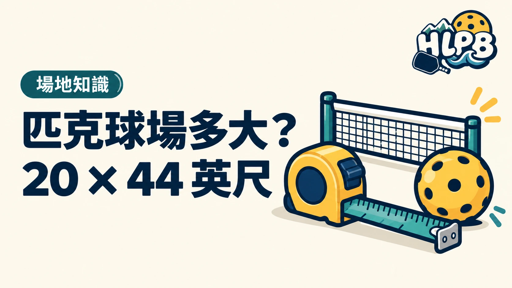

標準匹克球場為 20 × 44 英尺，單打與雙打使用相同尺寸。規劃或辨認場地時，還要把球場界線、非截擊區與周邊移動空間分開看。
尺寸與網高快速對照
| 項目 | 英制 | 約略公制 |
|---|---|---|
| 場地寬 | 20 英尺 | 6.10 公尺 |
| 場地長 | 44 英尺 | 13.41 公尺 |
| 球網到非截擊線 | 7 英尺 | 2.13 公尺 |
| 邊線處網高 | 36 英吋 | 91.44 公分 |
| 中央網高 | 34 英吋 | 86.36 公分 |
場地尺寸以界線的外緣計算，公制表是換算方便閱讀。非截擊區位於球網兩側，每側各有一段 7 英尺的深度，不是把整個兩側區域合計成 7 英尺。
能畫出一個框，就代表能安全打嗎？
不能只看 20 × 44 英尺是否放得下。球員還需要底線後方與側邊的移動空間，現場若有牆、柱、網架或其他障礙，也需一併評估。本文列的是球場線內標準，不是任何空間配置的施工核可。
球網為什麼有兩個高度？
標準分別規定邊線處與中央的高度，因此量網時不能只量一個位置。HLPB 建議場地確認時把量測位置與單位寫清楚，避免把英尺和英吋、中央與兩側互換。
若準備實際設置球場，應再查官方場地規範與現場條件，不用照片比例替代量測。
內容更新：2026-10-20｜資料來源：USA Pickleball 官方資料；USA Pickleball 官方資料
返回文章列表